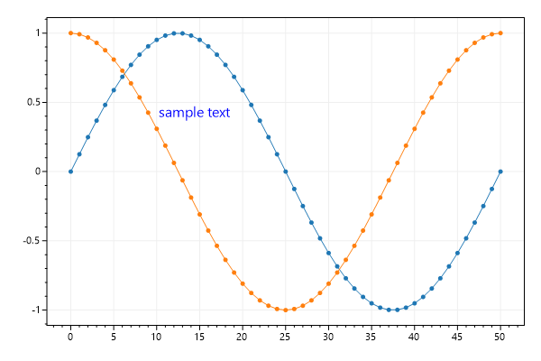
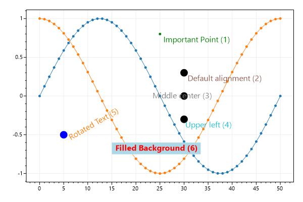
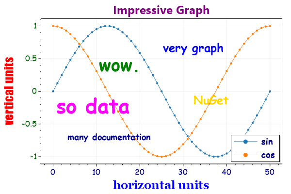

ScottPlot Cookbook: Plottable - Text
⚠️ Documentation is version-specific: This page was generated forScottPlot 4.1.4-beta
Additional documentation and more version-specific cookbooks are on the ScottPlot Website
Text
The Text plottable displays a string at an X/Y coordinate in unit space. Unlike the Annotation plottable, text moves when the axes are adjusted.var plt = new ScottPlot.Plot(600, 400);
int pointCount = 51;
double[] x = DataGen.Consecutive(pointCount);
double[] sin = DataGen.Sin(pointCount);
double[] cos = DataGen.Cos(pointCount);
plt.AddScatter(x, sin);
plt.AddScatter(x, cos);
plt.AddText("sample text", 10, .5, size: 16, color: Color.Blue);
plt.SaveFig("text_quickstart.png");

Text Alignment and Rotation
Advanced options are available to customize rotation and alignment. Note that if rotation is used, alignment is ignored.var plt = new ScottPlot.Plot(600, 400);
int pointCount = 51;
double[] x = DataGen.Consecutive(pointCount);
double[] sin = DataGen.Sin(pointCount);
double[] cos = DataGen.Cos(pointCount);
plt.AddScatter(x, sin);
plt.AddScatter(x, cos);
plt.AddPoint(25, 0.8, color: Color.Green);
var t1 = plt.AddText(" Important Point (1)", 25, 0.8, 16, Color.Green);
plt.AddPoint(30, 0.3, color: Color.Black, size: 15);
var t2 = plt.AddText(" Default alignment (2)", 30, 0.3, 16);
plt.AddPoint(30, 0, color: Color.Black, size: 15);
var t3 = plt.AddText("Middle center (3)", 30, 0, 16);
t3.Alignment = Alignment.MiddleCenter;
plt.AddPoint(30, -0.3, color: Color.Black, size: 15);
var t4 = plt.AddText("Upper left (4)", 30, -0.3, 16);
t4.Alignment = Alignment.UpperLeft;
plt.AddPoint(5, -.5, color: Color.Blue, size: 15);
var t5 = plt.AddText(" Rotated Text (5)", 5, -.5, 16);
t5.Rotation = -30;
var t6 = plt.AddText(" Filled Background (6)", 15, -.6, 16);
t6.Color = Color.Red;
t6.FontBold = true;
t6.BackgroundFill = true;
t6.BackgroundColor = Color.LightBlue;
plt.SaveFig("text_alignment.png");

Custom Fonts
You can pass in a Font to further customize font optionsvar plt = new ScottPlot.Plot(600, 400);
// display some interesting data in the background
plt.AddSignal(DataGen.Sin(51), label: "sin");
plt.AddSignal(DataGen.Cos(51), label: "cos");
// add text with custom fonts
plt.AddText("very graph", 25, .8, new Drawing.Font() { Name = "comic sans ms", Size = 24, Color = Color.Blue, Bold = true });
plt.AddText("so data", 0, 0, new Drawing.Font() { Name = "comic sans ms", Size = 42, Color = Color.Magenta, Bold = true });
plt.AddText("many documentation", 3, -.6, new Drawing.Font() { Name = "comic sans ms", Size = 18, Color = Color.DarkBlue, Bold = true });
plt.AddText("wow.", 10, .6, new Drawing.Font() { Name = "comic sans ms", Size = 36, Color = Color.Green, Bold = true });
plt.AddText("NuGet", 32, 0, new Drawing.Font() { Name = "comic sans ms", Size = 24, Color = Color.Gold, Bold = true });
// configure axis labels
plt.YAxis.Label(label: "vertical units", fontName: "impact", size: 24, color: Color.Red, bold: true);
plt.XAxis.Label(label: "horizontal units", fontName: "georgia", size: 24, color: Color.Blue, bold: true);
plt.XAxis2.Label(label: "Impressive Graph", size: 24, color: Color.Purple, bold: true);
// configure tick labels
plt.XAxis.TickLabelStyle(color: Color.DarkBlue, fontName: "comic sans ms", fontSize: 16);
plt.YAxis.TickLabelStyle(color: Color.DarkGreen, fontName: "comic sans ms", fontSize: 16);
// add a legend to the corner
var legend = plt.Legend();
legend.FontName = "comic sans ms";
legend.FontSize = 18;
legend.FontBold = true;
legend.FontColor = Color.DarkBlue;
plt.SaveFig("text_fonts.png");
